The feel
Claymation is modelling clay moved in tiny steps and recorded a frame at a time.1 It keeps the marks of the hands that moved it: Nick Park wants viewers to "see the thumbprints", which he likens to the brush strokes of an impressionist painting, because without them "you lose some kind of connection".2 Almost everyone has played with modelling clay, so it feels familiar before anything moves.2
Clay can also melt from one shape into another on camera, and even in Will Vinton's otherwise realistic films those metamorphoses are "intrinsically surreal".3 Jan Švankmajer's clay lovers embrace, melt together and spit out a smaller ball of clay,4 and in The Dream Machine's handmade sets the wrong angles and imperfections are a large part of its unsettling charm.5
- squashy
- lumpy
- thumbed
- boiling
- tabletop
- oddly tender
Where it comes from
William Harbutt, an art teacher in Bath, invented Plasticine as an oil-based alternative to clay, which dries out, and was advertising it with a book on how to use it in 1897.6 Art Clokey's student film Gumbasia (1955) set clay shapes morphing to jazz,7 and Will Vinton, who won an Academy Award with Bob Gardiner for Closed Mondays (1974), coined and trademarked the word Claymation.8 In Bristol, Aardman was at the forefront of a clay animation revival, and Nick Park's A Grand Day Out (1989) introduced Wallace and Gromit.9,2 Games followed with ClayFighter (1993), animated from photographs of clay figures,10 The Neverhood (1996), built on clay sets,11 and Mason Lindroth's one-man RPG Hylics (2015).12,13
Core elements
Visible fingerprints
Fingerprints and small flaws stay in on purpose. Nick Park doesn't want the work "too slick, too finished",2 and Aardman's Will Becher says "sometimes those little finger marks and prints help make the character".14 Stop-motion is most powerful, the BFI argues, when you can see indications of the hands that crafted it.15
The boil
Every pose means handling the puppet, so surfaces twitch and jump a little between frames, what the BFI calls "the artifacts of the poking and prodding required to animate".15 No shot can be repeated exactly, and Aardman counts that imperfection as part of what stop-motion is.14
Stepped movement
Nothing is tweened: the animator moves or reshapes the figure in tiny increments and records it a frame at a time.1 Shooting on twos or threes, two or three frames per movement, lowers the frame rate further and avoids an overly smooth look.15
Simple characters with expressive brows
Keep characters simple: Aardman's Luis Cook says you can make one as simple as you like as long as you put eyes in.16 Wallace and Gromit do their acting with their eyes and brows, and silent Gromit does all of it there.16 Give clay heads a light core, because too much clay makes them heavy.17
Physical miniature sets
The world is a physical model on a table. The Neverhood's entire universe fit on a table in a studio, yet players could feel the weight of the clay through the monitor.18 The Dream Machine was built on a workbench the size of an Ikea desk, which limited how big its sets could be.5
Morphing between shapes
Clay changes shape on camera: the sculptures in Vinton's Closed Mondays transform by "metamorphic meltings and reformations".3 Bruce Bickford morphed figures relentlessly, and in his films a character might suddenly become the landscape.1 In Hylics nearly everything is clay or at least malleable, so bins crumple when searched and juice boxes implode.12
How to do it
Choose a non-hardening clay
Use a plasticine that never hardens. Oil-based brands such as Van Aken can be melted to mix colours, but they soften under lights and warm hands, turn tacky and pick up dirt and hairs.19 Aardman long used Newplast, which softens less under studio lights;19,20 since its factory closed, UK animators can turn to Chroma Clay, a wax-based plasticine made for stop-motion.20 Keep baby wipes nearby for cleaning, as Aardman's crews do.14
Build a wire armature
Twist three strands of 1.5 mm aluminium wire in a slow drill for the spine and limbs, with a single 1 mm strand at each wrist.17 Leave wire out of plasticine fingers, or it will poke through as you animate.17 A human figure is usually about 20 to 25 cm tall; go bigger for close-ups so textures hold up on camera.16 Fix the feet with tie-downs and wing nuts, or with magnets under a perforated steel floor.17
Control the light to stop flicker
Use a manual-aperture lens and controlled light, with no daylight from windows and a steady power supply, or the exposure will flicker from frame to frame.21 Longer exposures flicker less, and even a bright shirt can bounce light onto the set.21 The Neverhood lit its big puppet sets from overhead.11
Shoot on twos
A second of animation is 24 frames, but you can capture 12 or 8 poses a second and hold each one for two or three frames.22 Switch the boil on this page between 1s, 2s and 3s to feel the difference. Henry Selick shot on twos, and at times threes, to avoid an overly smooth look.15
Shoot sprites on green screen
Animate each move, such as a run, jump or climb, as a short sequence that can flow into the others in any order, and test the drawings in the engine before shooting any clay.23 Then shoot each action once against green screen, so it can be dropped in front of any background, and key the green out.23 Mason Lindroth photographs objects against a green screen, adjusts a few sliders in an image editor and keeps the resolution low, which makes compositing easy.12
Imitate clay in 3D
Work at 12 frames a second, key the motion by hand and remove ease in and ease out, which looks computer-generated.24 Run noise through a displacement channel so the shape looks squeezed by a fist, and add finer noise for grit.24 A stepped curve samples the motion every few frames and holds each value until the next step.25 Harold Halibut sculpted its faces by hand and scanned them, then animated them in 3D at a much lower frame rate, chopping between keys instead of interpolating.26
Light and render at tabletop scale
Imagine every effect at tabletop scale: Harold Halibut's team staged fog as if from a fog machine blowing in from the side, and kept every light physically correct.26 Fingerprints, cracks and dents on the surface help too, as The Lego Movie's computer-animated plastic shows.15 Finish with depth of field to soften the frame and a little film grain, so it looks shot rather than rendered.24
Cheat sheet
- Frame rate
- 24 fps, with 12 poses a second on twos or 8 on threes22
- Puppet
- About 20 to 25 cm for a human figure, 15 to 35 cm overall16
- Armature
- Three 1.5 mm aluminium wires twisted, 1 mm at the wrists17
- Feet
- Tie-downs and wing nuts, or magnets on perforated steel17
- Camera
- Manual aperture, controlled light, no daylight21
- CG fake
- 12 fps, keyed by hand, no ease in or out24
Do
- Leave some thumbprints in. At Aardman, "sometimes those little finger marks and prints help make the character".14
- Keep characters simple, and give them eyes and brows to act with.16
- Draw and test every game move before you shoot any clay: problems are easy to fix at the pencil stage.23
- Use clay's plasticity: let shapes melt and re-form into new ones.3
- Fake depth when the table runs out. The Dream Machine's makers sometimes cheated and added depth to scenes in an image editor.5
Avoid
- Smoothing every mark away. Nick Park doesn't want it "too slick, too finished".2
- Ease in and ease out on every key. Joey Korenman strips them out of his moves because they look computer-generated.24
- Daylight, unsteady power and automatic apertures, all of which make the exposure flicker.21
- Extreme squash and stretch on a real puppet. The Neverhood's team broke many puppets that way.11
- Using clay as a gimmick on a thin game. Kill Screen notes that clay was mostly tacked onto undercooked games, and that in Armikrog the craft never rewards itself.18
Tools and tutorials
- Dragonframe
Stop-motion capture software. Its flicker FAQ is worth reading before you set up lights.21
- Stop Motion Studio
Start today with a phone and a lump of clay. Its manual explains shooting on twos.22
- Stop Motion Tutorial: Making an Armature
Michael Parks builds a puppet skeleton from wire and putty.
- Stop Motion Tutorial: Animating a Walk
Michael Parks takes a walk one pose at a time.
- Properties of different clays
Mike Brent and Lionel Orozco compare plasticine, polymer clays, epoxy putties and Newplast.19
- Blender: F-Curve modifiers
Stepped Interpolation holds each value for a set number of frames: moving on twos without a tween.25
Palette
Sampled from The Neverhood, A Grand Day Out and Hylics 2. Plasticine colours can be blended by kneading or, for oil-based clays, by melting.19
Feel the vibe
In motion
Listen
Listen to how loose and homemade it sounds next to the lumpy world on screen.
YouTubeFrom Skullmonkeys, the platforming sequel to The Neverhood.18
YouTubeJaunty and small-town, as homemade as the puppets.
YouTubeFrom Hylics 2, the follow-up to Lindroth's clay RPG Hylics.13
YouTubeA live performance. Nick Park worked on the 1986 video at Aardman,9 and Švankmajer's Dimensions of Dialogue influenced it.4
YouTube
More references
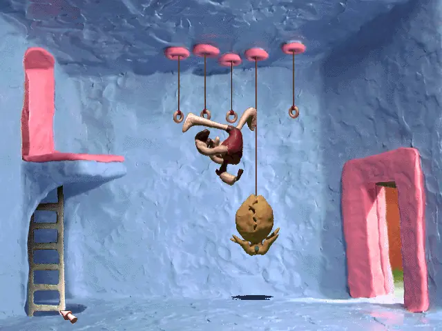
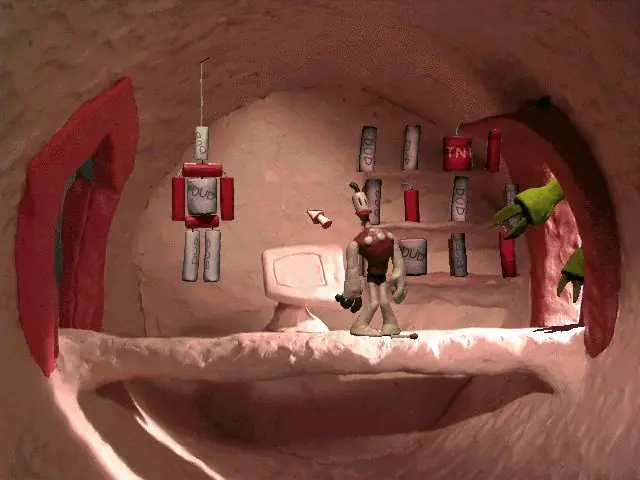
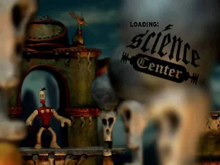
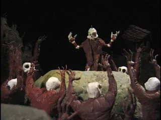
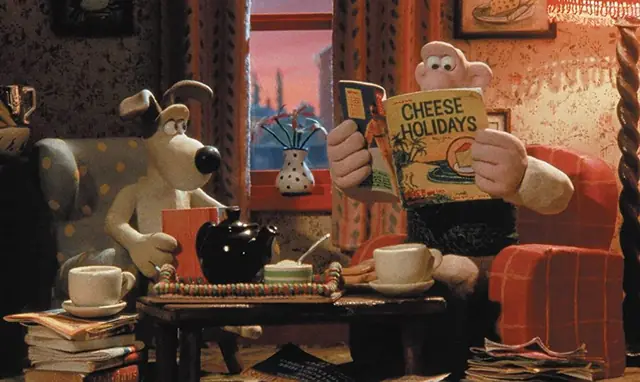
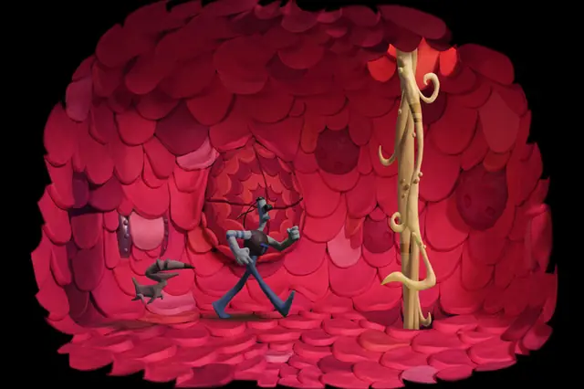
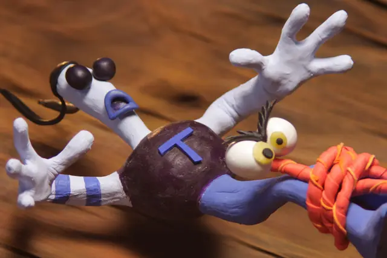
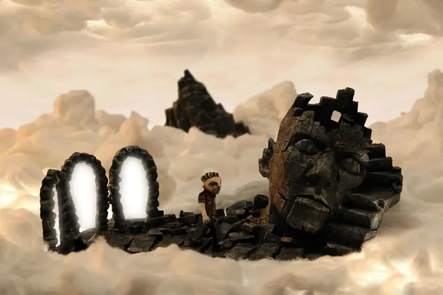
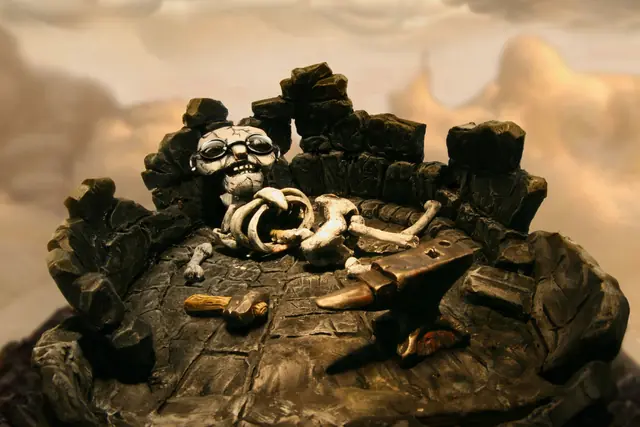
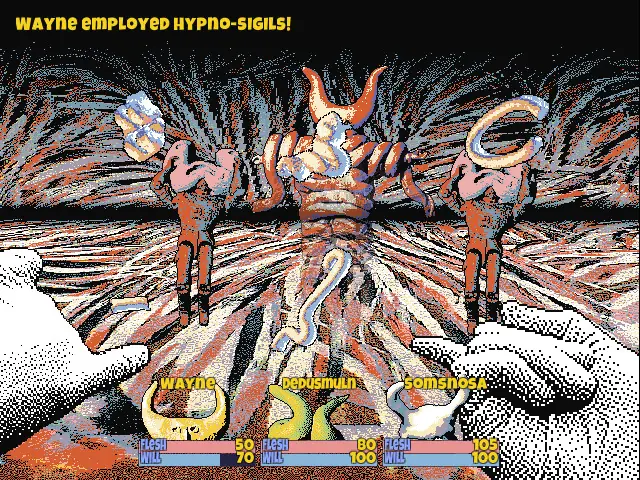
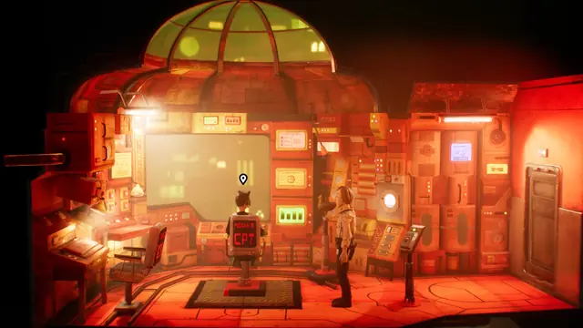
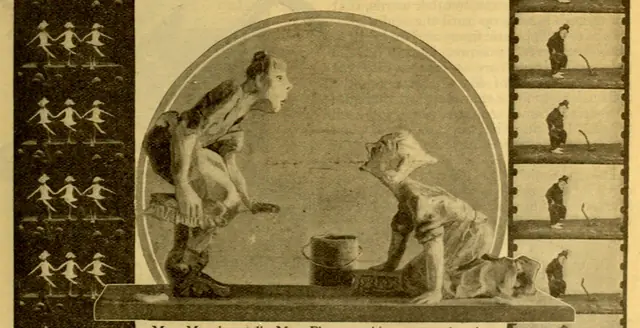
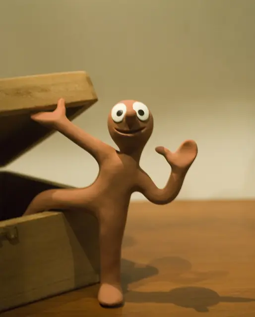
Games
- The Neverhood
Start here: a whole clay world that fit on a studio table, yet felt like a real place.18
- ClayFighter
Clay figures, photographed and animated as Super Nintendo fighting sprites.10
- Skullmonkeys
The Neverhood's world as a 2D platformer,18 its puppets shot once on green screen and dropped in front of many backgrounds.23
- Hylics
One person, clay photographed on green screen, and a low resolution that keeps compositing easy.12
- The Dream Machine
Two people, building the whole game by hand on a workbench the size of an Ikea desk.5
- Armikrog
The belated follow-up to The Neverhood, adding cardboard, fuzz and marbles to the clay.18
- Harold Halibut
Handmade puppets and sets, scanned and animated digitally.26
Film, art and more
- A Grand Day Out
The short that introduced Wallace and Gromit, begun as Park's graduation project.2
- Closed Mondays
Vinton and Gardiner's Oscar winner:8 a drunk wanders into a museum where paintings come to life and sculptures melt from shape to shape.3
- The Adventures of Mark Twain
A feature film from Vinton's studio.8 Study how far the studio pushes clay at feature length.
- Dimensions of Dialogue
Clay lovers melt into each other and clay heads spit objects back and forth.4
- Gumby
Art Clokey's green clay character, on television from 1956.7
- Clay animation
A broad history to start from. Follow its footnotes to the original sources.
Sources
- 1Bickford, Bruce (1947-2019)
- 2Rough Magic
- 3Vinton, Will
- 4100 Greatest Animated Shorts / Dimensions of Dialogue / Jan Svankmajer
- 5The eerie stop-motion game that's 'better than sex with Jesus'
- 6Plasticine
- 7Gumby Creator Art Clokey Dies at 88
- 8Will Vinton, Stop-Motion Legend And Claymation Creator: Dead At 70
- 9Nick Park
- 10Revisiting ‘Clayfighter,’ The Series That Tried (And Failed) To Show What Stop-Motion Gaming Can Do
- 11Welcome To The Neverhood
- 12The material world of Mason Lindroth
- 13Remembering Hylics, the surreal art RPG
- 14Aardman at 50: Inside the Clay, Felt, and Fingerprints
- 15Stop-motion imperfection: why animation needs the human touch
- 16Coat Hangers for Armatures: Making Your Own Model
- 17Coat Hangers for Armatures: Making Your Own Puppet
- 18Armikrog and the unfulfilled promise of claymation videogames
- 19Properties of Different Clays as applied to Stop Motion Use
- 20Ha-Clay-Luiah! U.K. Stop-Motion Artists Get A New Plasticine Option With Chroma Clay
- 21How to reduce flicker? What are possible sources of flicker?
- 22Shooting on Twos
- 23Our Animation Process
- 24Tutorial: Create a Claymation in Cinema 4D
- 25F-Curve Modifiers
- 26How They Made ‘Harold Halibut’: A Handcrafted Stop-Motion-Inspired Video Game